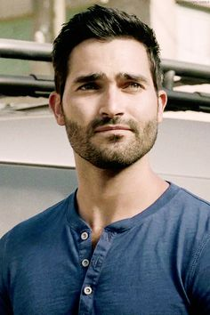

Teen Wolf
Scott McCall es el protagonista de la serie "Teen Wolf", interpretada por el actor Tyler Posey.
Scott es un estudiante promedio de 16 años que necesita un inhalador médico debido al asma. Un día, decidió ir a la escena del crimen con varios policías con su mejor amigo Stiles. Después de estar solo en el bosque, fue atacado por un monstruo con forma de lobo, lo mordió severamente en el abdomen, este incidente le dio la identidad de un hombre lobo. Después de sufrir esta enfermedad, su capacidad física mejorará y podrá curar por completo el asma que afecta su vida.
Incluso con extraños, Scott es amistoso, serio y humilde. Es valiente y tiene dotes de liderazgo. Su deseo de ayudar lo puso en varias situaciónes muy peligrosa.

Stiles Stilinski es uno de los personajes principales de la serie "Teen Wolf", interpretado por el actor Dylan O´Brien.
Es el mejor amigo de Scott McCall, su madre está muerta y su padre es el sheriff de Beacon Hills. Un día, él y su mejor amigo fueron al bosque para encontrar un cadáver, al separase Scott es mordido por un lobo Alpha y empieza con cambios, esto es algo que Stiles ha notado desde el principio y está listo para ayudar a su mejor amigo en su vida. Stiles es un personaje muy importante en la historia porque es la única persona en un grupo de amigos.
Allison Argent es la protagonista de la serie "Teen Wolf” desde la primera hasta la tercera temporada interpretada por Crystal Reed.
Alison es la única hija de Chris Argent y Victoria Argent. Su familia ha estado cazando hombres lobo durante generaciones, pero Allison se entera del secreto de su familia ya siendo adolescente.
Vivía en San Francisco, pero se mudó con su familia a Beacon Hills, donde conoció a Scott McCall y comenzó una relación sentimental, luego se enteró de que su novio era un hombre lobo y tuvo que enfrentarse a su familia. Aunque su familia odia a las criaturas sobrenaturales y es sanguinarea como su tía Kate Argent, Allison es diferente a ellos, demostrando ser bondadosa, buena e incapaz de matar a alguien.
Lydia Martin es uno de los personajes principales de la serie Teen Wolf. Es interpretada por la actriz Holland Roden.Lydia Martin es la estudiante más popular de Beacon Hill High School. Su belleza y sentido de la alta moda la hacen admirada por todos los estudiantes, pero Lydia es muy talentosa, tiene un gran coeficiente intelectual que mantiene escondido para conservar su popularidad..Se muestra como una persona fría y superficial, pero en su relación con Jackson Whittemore se demostró que en verdad podría llegar a preocuparse y enamorarse de alguien. Era la mejor amiga de Allison Argent

Derek Hale es otro de los personajes principales de la serie Teen Wolf. Es interpretado por el actor Tyler Hoechlin. Perdio a casi toda su familia en un incendio. Su tío Peter sobrevivió pero estuvo en coma durante mucho tiempo. Debido a la muerte de su hermana, regresó a la ciudad, decidido a encontrar al culpable. Se convirtió en un aliado / enemigo de Scott y trató de enseñarle más sobre cómo convertirse en un joven hombre lobo, pero a veces hay diferencias en la forma en que hacen las cosas, lo que casi siempre es fatal.
Jackson Whittemore otro personaje principal interpretado por el actor Colton Haynes. Jackson fue un personaje principal de Teen Wolf en la Temporada 1 y la Temporada 2. Jackson fue presentado por primera vez como él típico popular que era mejor conocido por ser el jugador "estrella" de lacrosse y el novio de la chica más popular en la escuela, Lydia Martin
Derechos recervados a Valeria Quiroz Brambila, Sophie Galvan Alejandra Cosio, Jaydy Jay Fuentes ©